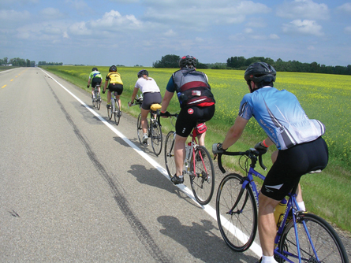

Module 2—Talking Energy
Big Picture

Biodiesel is a fuel that has been receiving a great deal of attention. Oil from the canola plants pictured to the right of the cyclists in the photograph can be used to produce biodiesel, as can waste vegetable oil from restaurants.
In Module 2 you will learn more about energy changes in chemical reactions while investigating the production, testing, and use of biodiesel as a possible fuel source for vehicles.
The use of biodiesel as a vehicle fuel will tie into the Module 2. Read on to learn more about the lessons, activities, and assessments you will complete as you progress through Module 2.
 In This Module
In This Module
Each lesson contains a range of activities. These include
assignments, labs, and Self-Check, Try This and Reflect and Connect.